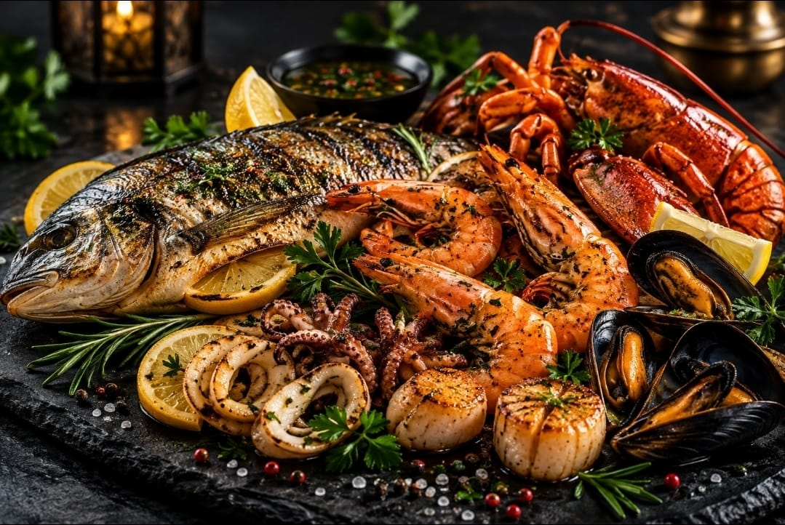
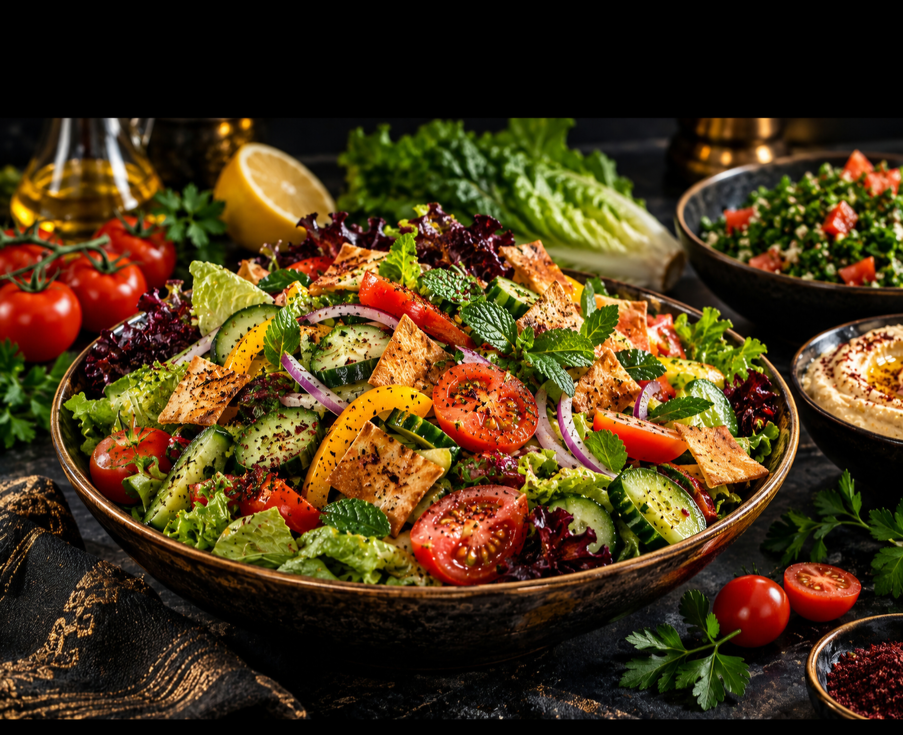
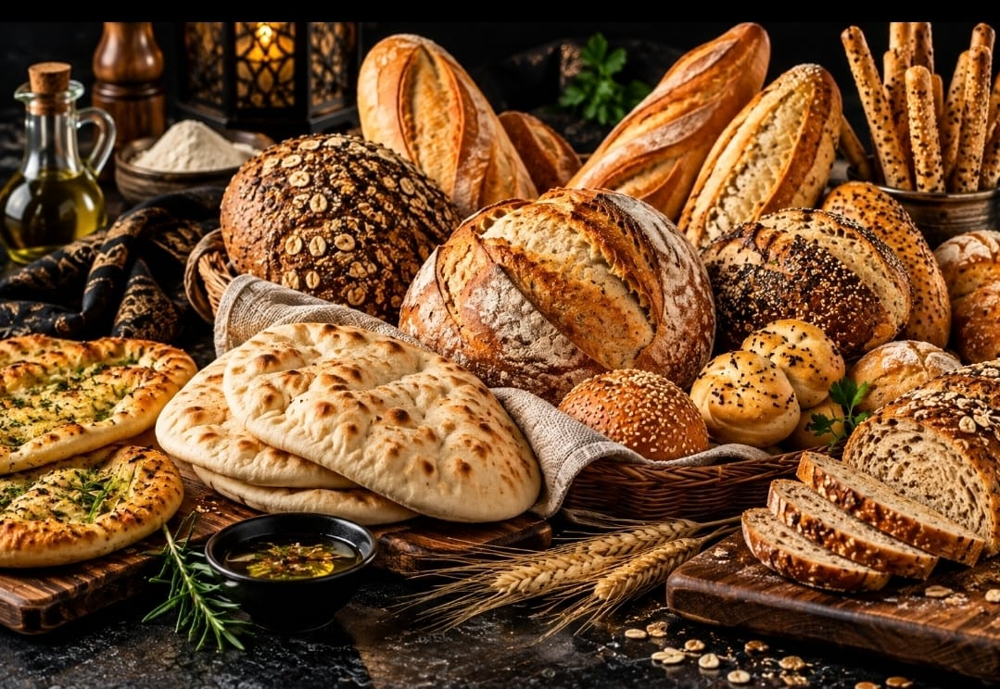
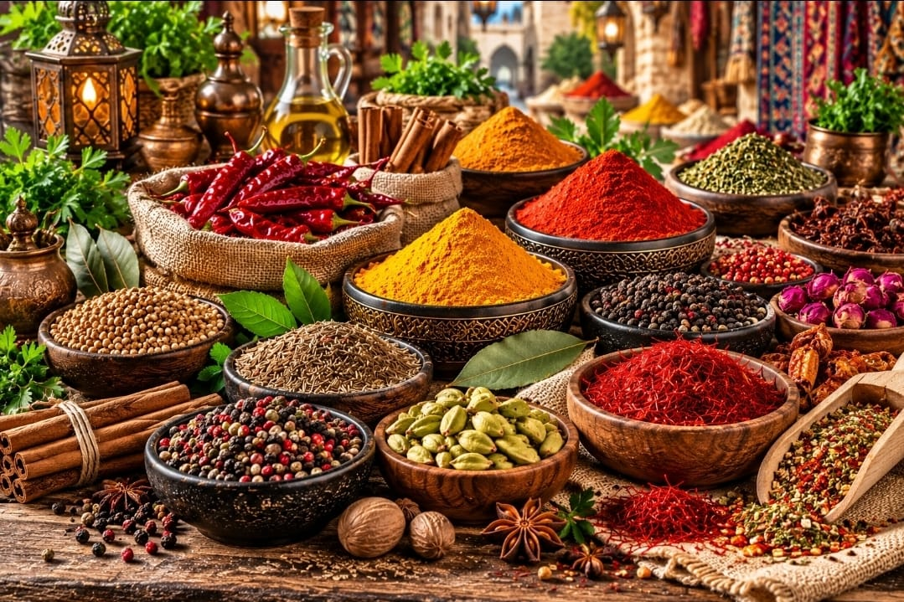

01
Syrian Cuisine
Traditional dishes and authentic flavors inspired by Syria's rich culinary heritage.
CHEF KASSEM TAHA RECIPES
Explore a growing collection of recipes and culinary categories built around professional kitchen experience, international cuisine and authentic flavors.
EXPLORE BY CATEGORY
Choose a category and discover recipes ranging from traditional Syrian cuisine and international dishes to healthy food, bakery, seafood, spices and desserts.
Traditional dishes and authentic flavors inspired by Syria's rich culinary heritage.

Selected dishes and culinary ideas inspired by cuisines from around the world.

Meat, chicken and grilled specialties prepared with professional techniques and bold flavors.

Fish and seafood recipes combining freshness, balanced seasoning and professional presentation.

Fresh salads, classic combinations and creative recipes with balanced dressings and textures.

Balanced recipes created for healthier lifestyles while maintaining flavor and quality.

Traditional and international breads, dough techniques and professional baking methods.
Savory pastries, bakery recipes, dough preparation and professional production techniques.

Spice blends, seasoning principles and flavor combinations for professional cooking.

Classic and modern desserts combining technique, presentation and refined flavor.

Ice cream, chocolate and specialty dessert creations for professional and creative kitchens.
CULINARY KNOWLEDGE